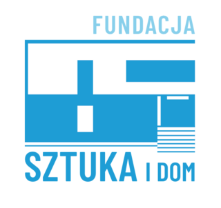

About the project
Purpose of the project
The purpose of the project, run by the Sztuka i Dom Foundation, is to save from oblivion the artistic legacy of the outstanding sculptor Stanisław Strzyżyński, and to bring it closer to the residents and visitors of Nałęczów through a digital walk in his footsteps.
Who is behind this project

The project is created in collaboration with the Sztuka i Dom Foundation and Zbigniew Strzyżyński - the artist's son, a sculptor himself, and co-creator of the Bolesław Prus Bench - who narrates the recordings accompanying the walk, telling the story of his father and his work.
You can also find the Sztuka i Dom Foundation online:
Acknowledgements
We would like to thank Zbigniew Strzyżyński, who appears in the recordings accompanying the walk, for his tireless efforts to preserve his father's cultural legacy.
Because the route was created and tested by volunteers of the Sztuka i Dom Foundation, to whom we are sincerely grateful, this project also promotes volunteering and civic engagement. Ania, Krysia, Marta, Magda, Jacek, Michał, Paweł - you are wonderful.
Partners and funding
The initiative "Cyfrowy spacer śladami artysty rzeźbiarza Stanisława Strzyżyńskiego" ("A digital walk following the sculptor Stanisław Strzyżyński") is carried out as part of the "Fundusz Inicjatyw MRW – Działam, bo lubię" project, funded by the Fundusz Inicjatyw Międzynarodowego Roku Wolontariatu. The Regional Operators of the project are: Bieszczadzki Uniwersytet Ludowy, Stowarzyszenie Sursum Corda, and Fundacja Bieszczadzka.

Funded by the National Freedom Institute – Centre for Civil Society Development, as part of the International Year of Volunteers Initiatives Fund.

This project was carried out with support from the MRW Initiative Fund "Działam, bo lubię" ("I act, because I like to").